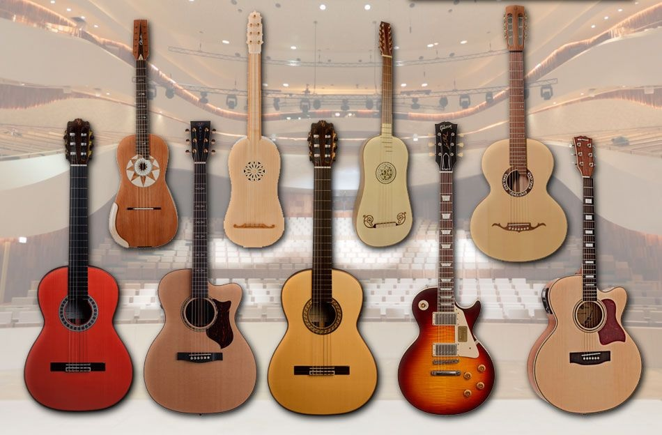
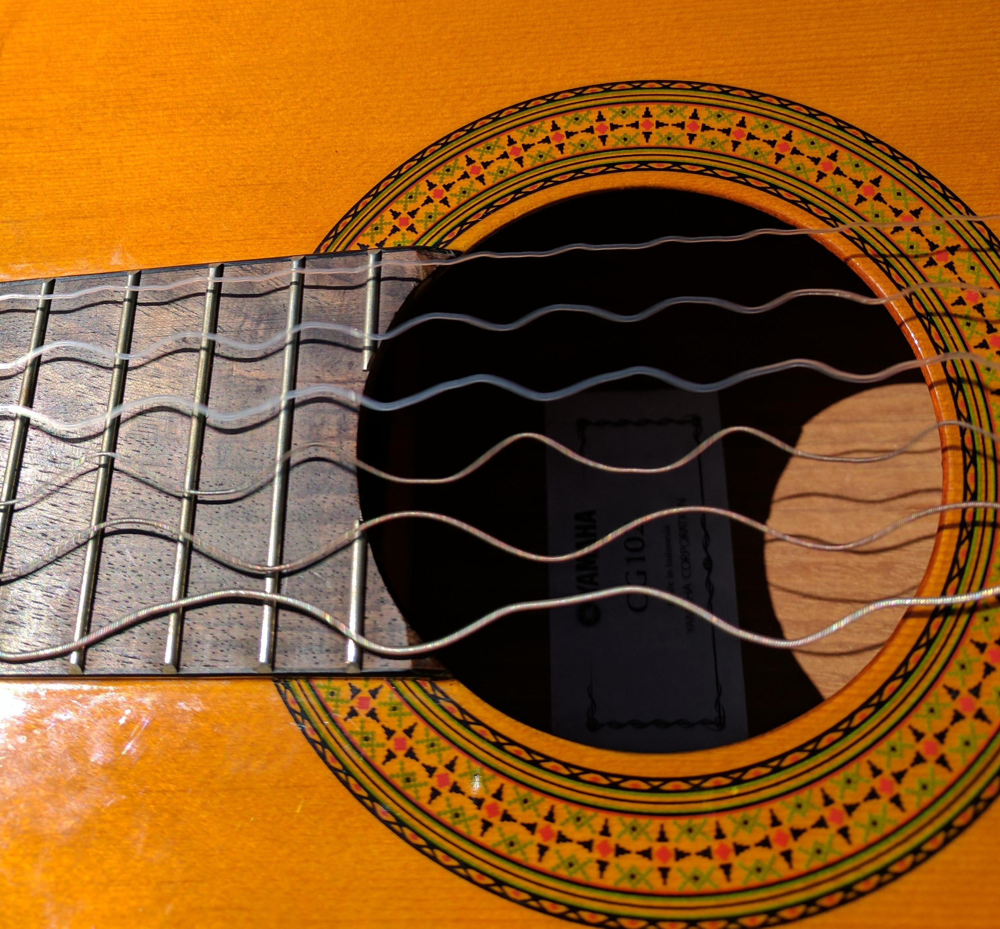
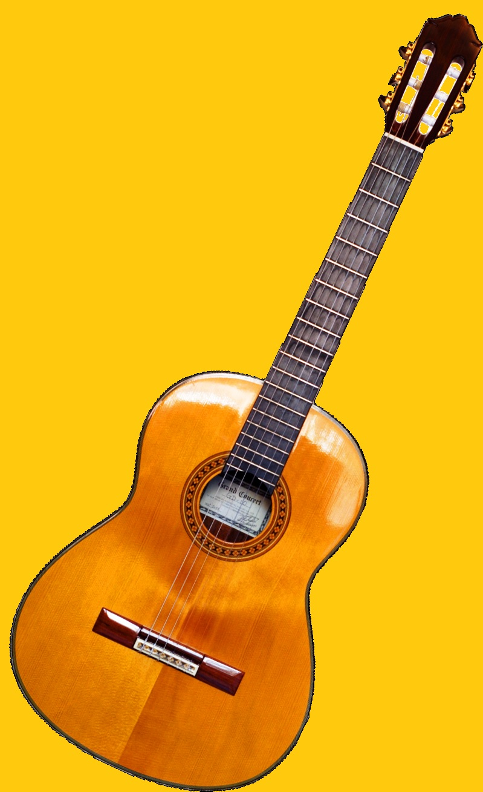
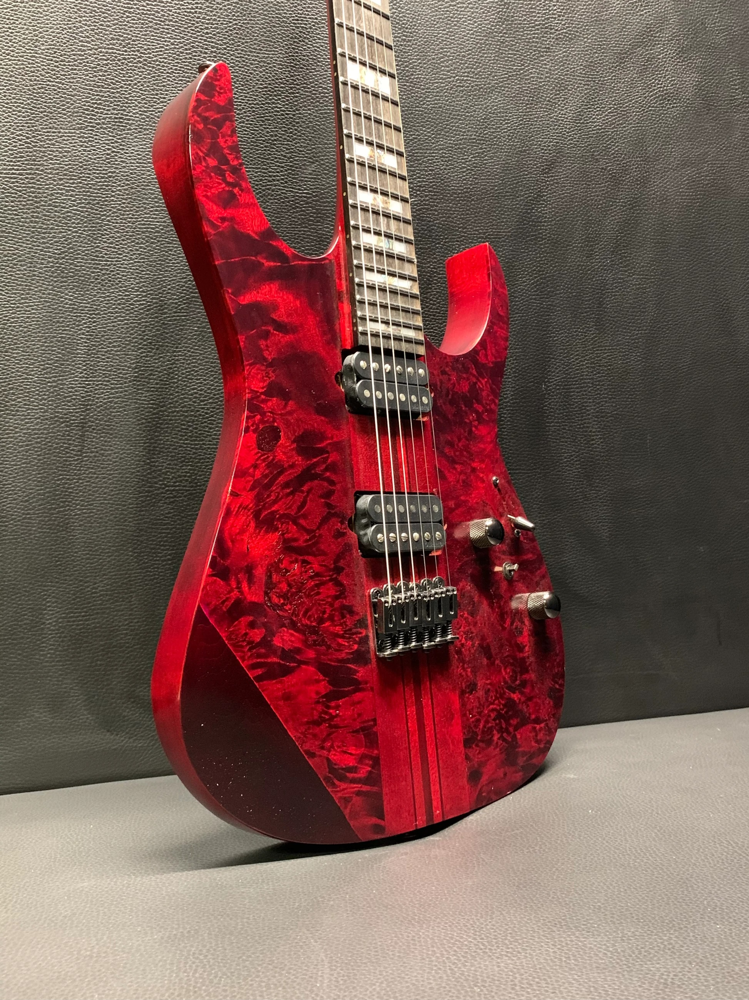

Chitara
Istoria Descriere Tipuri

Chitara ori ghitara (pl. chitare, ghitare) este un instrument muzical cu coarde ciupite. Ea are un gât lung, delimitat cu ajutorul tastelor (en. frets), și o cutie de rezonanță ale cărei ambe fețe sunt plane. În lateral, se formează „umerii” caracteristici, rotunzi, care dau corpului forma cifrei 8. Acordajul standard în cvarte perfecte (cu o singură excepție) aduce cu cel al instrumentelor din familia violei (viola da gamba, violone ș.a.).
Chitara joacă un rol important în numeroase genuri muzicale aparținând folclorului, dar îndeosebi muzicii de consum. Între aceste genuri, se numără muzica blues, country, folk, flamenco, jazz, rock, metal și pop. Practica contemporană include chitara cu șase corzi (acustică, mult mai rar electrică) în muzica cultă astfel: repertoriul specific este cântat la chitară „clasică” (ale cărei corzi sunt fabricate din nailon), muzica veche (renascentistă sau barocă), în lipsa unui instrument mai potrivit, se execută la chitară cu corzi de oțel, iar muzica contemporană se va executa la ambele, în funcție de indicațiile din partitură. La chitară se poate cânta folosindu-se exclusiv proprietatea acustică a corpului chitarei (în care se propagă undele sonore create de vibrația corzilor la ciupire) sau folosindu-se un amplificator (potrivit atât la chitare electrice, cât și la cele acustice) ce crește în intensitate și modelează, în funcție de preferințele chitaristului, semnalul captat de dozele electromagnetice montate în apropierea corzilor.
Istoria chitarei

Apariția chitarei constituie o invenție târzie, ce aparține de Renaștere (sec. XVI). În schimb, inventarea tehnologiilor fără de care nu s-ar fi putut realiza aceasta și construirea instrumentelor al căror descendent direct este , datează din timpuri mult mai vechi. Istoricul chitarei va face referire și la instrumentele cordofone care au purtat pe rând același nume, fără a avea prea mult în comun în ce privește construcția. Având la bază etimologia comună, aceste instrumente și chitara au fost puse „forțat” laolaltă; totuși, studiile efectuate de Michael Kasha în anii 1960 au adus argumente definitive în această direcție, arătându-se că etimologia nu atesta alte indicii de rudenie între instrumente, ci arăta cel mult cum a ajus să desemneze aceeași denumire varietăți foarte diverse de-a lungul timpului și spațiilor geografice traversate.
.jpg)
Chitară barocă (~1630)
În secolul al XVI-lea, chitara cu patru coruri (perechi de corzi) s-a răspândit în mare parte din Europa Occidentală, devenind un instrument popular în Spania, Italia, Franța și Anglia. Cele mai vechi tabulaturi pentru chitară au fost tipărite în această perioadă.
Acordajul chitarei renascentiste era aproape identic cu cel folosit la ukulele, cele patru coruri având aceleași intervale relative precum primele patru corzi ale chitarei moderne, dar într-un registru mai înalt.
O descriere a instrumentului
Chitarele pot fi folosite atât de instrumentiști dreptaci, cât și de stângaci. În general, chitaristul folosește mâna cu care scrie pentru ciupirea corzilor; degetele celeilalte mâini vor apăsa corzile pe taste, pe rând sau simultan (pentru acorduri), activitate ce implică un alt fel de coordonare din partea creierului. Raționamentul este valabil pentru toate instrumentele cordofone cu tastieră (de exemplu, cele din familia viorii, familia violei, lăuta etc.), singura diferență în cazul instrumentelor cu arcuș fiind un set diferit de gesturi pentru mâna care pune corzile în mișcare.
O chitară este împărțită în trei părți: cap, gât și corp.
Capul
Capul este situat la extremitatea gâtului care îl unește cu corpul chitarei, fiind dotat cu dispozitiv de chei de acordare de sisem melc - roată dințată, care prin rotirea axului melcului întind sau slăbesc coardele, respectiv măresc sau micșorează tensiunea aplicată corzilor elastice prin aceasta schimbând tonalitatea lor, în scopul acordării instrumentului. La chitara clasică, ele sunt dispuse câte trei pe două rânduri de o parte și de alta a capului; această configurație se regăsește și la unele chitare electrice. Cheile pot fi dispuse și în linie (modelul Fender Stratocaster). Există și alte moduri de aranjare a mecanismului de acordare; un exemplu ar fi chitarele electrice Steinberger care, neavând cap, au dispozitivele respective montate pe corp sau pe punte.
Gâtul
Gâtul numit și grif are în partea superioară o tastieră, care este construit din lemn tare în care sunt încastrate barele de metal (tastele) și în lungul căruia sunt întinse corzile chitarei. Aceasta este plată la chitara clasică și ușor curbată, pe lățime, la chitarele acustice și electrice.
Curbura tastierei se măsoară prin raza tastierei, care este raza unui cerc ipotetic din care suprafața tastierei constituie un segment. Apasând o coardă asupra unei bare de metal de pe tastieră se scurtează lungimea de vibrație din coardă și astfel se produce o frecvență mai înaltă de sunet. Tastierele sunt realizate cel mai frecvent din lemn de palisandru, abanos, arțar și uneori din materiale compozite, cum ar fi HPL sau rășină.
Corpul
După forma corpului, chitara aparține lăutelor cu gât. La instrumentele acustice (spre deosebire de electrice), corpul constă de obicei dintr-o cutie de rezonanță ușoară din lemn, taliată, constând din spate, pereți laterali numiți eclise de aceeași înălțime și placa superioară numită față de rezonanță, cu o inserție adesea introdusă în marginea dintre eclisă și placa superioară, având un orificiu de regulă rotund numit orificiu de rezonanță sau rozetă. Fața de rezonanță și spatele sunt confecționate din lemn de rezonanță (molid de rezonanță).
Poate avea o diversitate de forme și aceasta datorită faptului că nu trebuie să mai îndeplinească rolul de amplificator al vibrației, amplificarea făcându-se cu ajutorul componentelor electrice. În acest caz se pune mare accent pe doze, componentele care captează vibrațiile coardelor. Corpul chitarei este confecționat din lemn. Este prevăzut ca și chitara "rece" cu cordar si înălțător (reglabil). Pe corp mai sunt montate dozele electromagnetice. Instalația electrică se află în interiorul corpului, iar butoanele de reglaj sunt în afară. Tot pe corp mai există si o mufă cu ajutorul căreia se face legătura între instalația chitarei și amplificator (mufa mamă jack mono, mare).
Principii de funcționare

Vibrația corzilor (unde staționare)
Când o coardă este făcută să vibreze, ia naștere imediat și o undă staționară. Înălțimea notei produse depinde de lungimea corzii și de tensiunea acesteia. Când cântă la chitară, muzicianul apasă corzile pe tastieră pentru a le scurta lungimea efectivă. Apăsând o coardă la jumătatea lungimii ei, se obține o frecvență de vibrație de două ori mai mare decât cea a întregii corzi, adică o octavă mai înaltă decât frecvența fundamentală a corzii.
Ca să poată fi auzit, sunetul produs de o coardă trebuie amplificat. Aceasta se face de obicei cu ajutorul unei cutii de lemn, numită cutie de rezonanță și care formează corpul chitarei. În anii 1930, chitariștii din fomațiile de muzică de dans și cei din bandele de jazz au început să își amplifice instrumentele, pentru ca acestea să poată fi auzite mai bine de către spectatori. Un traductor electromagnetic (o doză electromagnetică) este amplasat în spatele corzilor, transformând variația distanței față de coarda în mișcare în semnale electrice care pot fi amplificate și reproduse la volumul dorit de către un difuzor. Multe din chitarele moderne sunt special construite pentru a profita de această tehnică. În cazul lor, importanța corpului chitarei scade simțitor, deci el poate fi construit din material masiv.
Diferitele tipuri de chitara
Chitara clasică
Chitara clasică, cunoscută și sub numele de chitară spaniolă, este un membru al familiei de chitare utilizate în muzica clasică și în alte stiluri. Un instrument acustic cu coarde din lemn, cu corzi din intestin sau nailon, este un precursor al chitarelor acustice și electrice moderne cu corzi de oțel, ambele folosind corzi metalice. Chitarele clasice derivă din instrumente precum lăuta, vihuela, gittern (numele fiind un derivat al grecescului „kithara”), care au evoluat în chitara renascentistă și în chitara barocă din secolele al XVII-lea și al XVIII-lea. Chitara clasică modernă de astăzi a fost stabilită prin proiectele târzii ale lutierului spaniol din secolul al XIX-lea, Antonio Torres Jurado.
Pentru un chitarist dreptaci, chitara clasică tradițională are 12 freturi distanță de corp și este susținută corect de piciorul stâng, astfel încât mâna care ciupește corzile să o facă aproape de spatele găurii cutiei de rezonanță (aceasta se numește poziție clasică). Cu toate acestea, mâna dreaptă se poate deplasa mai aproape de grif pentru a obține calități ale sunetului diferite. Chitaristul ține de obicei piciorul stâng mai sus folosind un suport pentru picioare. Chitara modernă cu corzi de oțel, pe de altă parte, are de obicei 14 freturi distanță de corp (vezi Dreadnought) și este de obicei ținută cu o curea în jurul gâtului și umărului.
Chitara electrică
Chitara electrică este un tip de chitară care folosește doze electromagnetice pentru a converti vibrațiile provenite de la corzile metalice în curent electric, care poate fi amplificat.
În anii 1920, Lloyd Loar s-a alăturat lui Orville Gibson, cei doi construind prima chitară jazz, cu efuri decupate pe tabla de rezonanță (în locul obișnuitei rozete). Chitara electrică a luat naștere la inventarea primelor doze electromagnetice la sfârșitul anilor 1920, însă s-a bucurat de succes doar după 1936, când Gibson a introdus modelul ES 150, făcut celebru de chitaristul de jazz Charlie Christian. Odată cu creșterea posibilităților de amplificare a sunetului, chitara electrică a captat atenția multor muzicieni și, bineînțeles, a creatorilor de chitare, fapt care a declanșat o adevărată cursă pentru perfecționarea lor.
Semnalul provenit de la chitară poate fi apoi alterat pentru a obține diverse efecte sonore, etapă care are loc, în cele mai multe cazuri, înaintea introducerii semnalului în amplificator. Totuși, există efecte care se alimentează din semnalul primit anterior de sistemul de amplificare, variind între cea mai mică diferență în timp,(numită latență, adesea insesizabilă, mai mică de 60 ms pentru un rezultat convingător) și care pot fi obținute și în distanțe mai mari în timp (de exemplu, pentru efectul care imită producerea ecoului).
Dintre efectele de chitară consacrate:
- distorsionare (distortion / overdrive / fuzz) - apariția unui zumzet armonic (o mulțime de sunete/semnale ce însoțesc armonic sunetul/semnalul principal); efect obținut originar prin forțarea amplificatorului electric de chitară;
- reverberație (reverb) - adăugarea unui semnal întârziat, simulând ecoul dintr-o incintă spațioasă;
- cor (chorus) - adăugarea unui sunet/semnal cvasi-identic (cu un ușor decalaj) pentru crearea senzației de prezență multiplă;
- întârziere (delay) - întârzierea sunetului/semnalului cu un timp prestabilit (și eventual reluarea);
- ecou (echo) - adăugarea efectului de ecou (realuare întârziată și repetată a sunetului/semnalului);
- vibrato - adăugarea de alterații (periodice) în înălțimea/frecvența sunetului/semnalului;
- tremolo - alterarea volumului sunetului/semnalului (cu periodicitate);
- wah-wah - modularea sunetului/semnalului (în frecvențele fundamentalei și aromonicelor) pentru crearea onomatopeei "uau" la fiecare notă muzicală;
- compresie (compressor) - accentuarea regimului de atac al notelor (se accentuează panta crescătoare a semnalului);
- decompresie - atenuarea regimului de atac al notelor (se obține un sunet similar viorii);
- flanger - adăugarea unui sunet/semnal întârziat și modulat în frecvență;
- phaser - adăugarea unui sunet/semnal periodic modulat în frecvență;

Chitară clasică

Chitară electrică